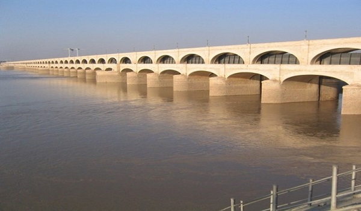
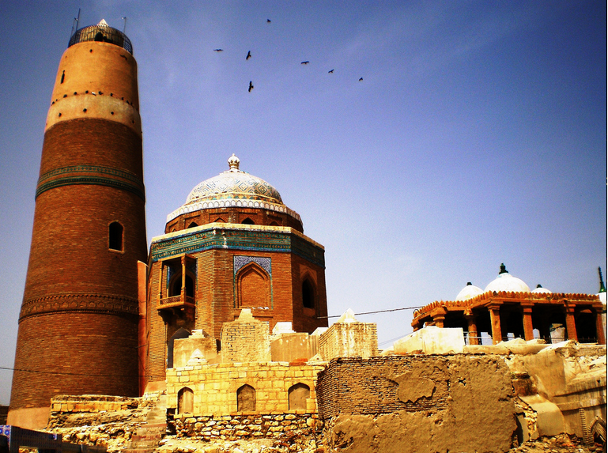
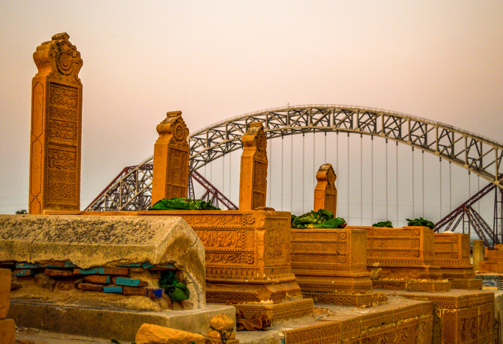

Places
Lansdowne Bridge
The Lansdowne Bridge over the Indus at Sukkur was one of the great engineering feats of the 19th century. The longest cantilever bridge ever built, it had to support the load of heavy steam locomotives. The bridge was inaugurated on March 25, 1889.

Barrage
The barrage was built during the British Raj from 1923 to 1932 and was named Lloyd Barrage. The Sukkur Barrage, is the pride of Pakistan's irrigation system as it is the largest single irrigation network of its kind in the world. It irrigates from Sukkur district in the north, to Mirpurkhas/Tharparkar and Hyderabad districts in the south of Sindh, almost all parts of the province.
Clock Tower
Clock Tower, Sukkur, also known as Ghanta Ghar, Sukkur,Ghanta Ghar is a clock tower located in Sukkur, Sindh. The tower is 90-feet high.

Minara Of Masoom Shah
The minaret of Ali Abuzar is the most conspicuous structure of Sukkur town, dating back to 1607 during the Mughal Empire in the Indian subcontinent. Masum Shah was the governor of Mughal Emperor Akbar who appointed him as the Nawab of Sukkur.
Sateen jo Aastan (Seven Sisters)
Sateen Jo Aastan is the resting place for the Seven Female-friends. According to folklore these female friends resided here.
Globe Chowk
The Chowk is Known as Globe Chowk Near is Sukkur Barrage